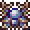
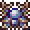

1. Frog Ammo (ammunition) - it can be used by 'Frog Gun' or a 'Stake Launcher'
| Ingredients: | at: |
|---|---|
1x Frog |
Ancient Manipulator |
1x Top Hat  |
|
Result: 100x Frog Ammo  |
|
Description:
Terraria mod that adds a new post-Duke Fishron gun that shoots BattleBlock Theater Frogs
Content:
Items
1. Frog Ammo (ammunition) - it can be used by 'Frog Gun' or a 'Stake Launcher'
| Ingredients: | at: |
|---|---|
| 1x Frog |
Ancient Manipulator |
| 1x Top Hat |
|
| Result: 100x Frog Ammo |
|
2. Frog Gun (weapon) - it uses 'Stakes' as ammo. Deals 250 damage and has a 25% chance to drop from Duke Fishron,
or 1/512 chance to drop from frog
and 100% chance to drop from golden frog